Esta guía explica cómo montar un servidor en casa que aloja tu web, tu nube privada y un bloqueador de anuncios para toda la red, sin abrir ningún puerto del router. Cada capítulo tiene los pasos, los comandos y cómo comprobar que funciona.
Nivel: 1.º de DAW, sin experiencia previa en servidores
Tiempo: un fin de semana largo
Coste: un dominio (unos 10 € al año)
Resultado final
Un único equipo que ejecuta cuatro entornos separados y aislados entre sí. El diagrama muestra qué corre en cada uno y cómo llega el tráfico.
Cada recuadro es un entorno independiente. El destacado es la puerta de entrada web.
Qué necesitas
Elemento
En este proyecto
Mínimo recomendable
Equipo
Ryzen 5 2600, 40 GB RAM
4 núcleos y 16 GB de RAM
Disco del sistema
SSD de 128 GB
SSD de 64 GB
Discos de datos
2 HDD de 512 GB
2 discos del mismo tamaño
Red
Router con DHCP configurable
Poder cambiar el DNS del DHCP
Dominio
Gestionado en Cloudflare
Cualquier dominio
Telegram
Bot para avisos
Opcional
El procesador del servidor visto con CPU-Z: Ryzen 5 2600, 6 núcleos y 12 hilos.
Cómo leer esta guía
Sigue los capítulos en orden. Los comandos tienen botón Copiar. Donde veas tudominio.com pon tu dominio, y las IP 192.168.0.x son las de este montaje: cámbialas si tu red es otra.
Antes de empezar
Instalar Proxmox borra el disco del sistema. Haz copia de todo lo que quieras conservar del equipo anterior.
Capítulo 1
Instalar Proxmox VE
Proxmox es el sistema que se instala directamente en el equipo y permite crear máquinas virtuales y contenedores desde una web.
Tiempo: 30 minutos
Necesitas: pendrive de 8 GB, monitor y teclado
Descarga la ISO y crea el pendrive de arranque
Descarga la ISO de Proxmox VE desde proxmox.com y grábala con Balena Etcher o Rufus.
Arranca desde el pendrive
Entra en la BIOS (suele ser F2, F12 o Supr) y elige el pendrive. En el menú pulsa Install Proxmox VE (Graphical).
Elige el disco del sistema
En «Target harddisk» selecciona solo el SSD pequeño. Los dos discos de datos los configuramos después con ZFS, así que no los toques aquí.
Configura la red
Pon una IP fija fuera del rango que reparte el router, por ejemplo 192.168.0.254, con la puerta de enlace del router (normalmente 192.168.0.1). En el nombre del equipo (FQDN) usa algo como pve.tudominio.com.
Por qué pve
El primer trozo es el nombre del nodo. Es corto y no se puede cambiar fácilmente después, así que elígelo bien al instalar.
Entra en la web de administración
Cuando reinicie, desconecta monitor y teclado. Desde otro ordenador abre https://192.168.0.254:8006, acepta el aviso de certificado y entra con el usuario root y el dominio Linux PAM.
Comprueba el estado de los discos
Abre el terminal del nodo (Nodo → Consola) y revisa que los tres discos están sanos.
Durante la actualización aparecen avisos sobre el microcódigo de AMD: son informativos.
Aviso de suscripción
Sin licencia, Proxmox muestra un aviso al entrar y puede fallar apt update con los repositorios Enterprise. Desactiva esos repositorios en Nodo → Actualizaciones → Repositorios y añade el repositorio No-Subscription.
Comprueba que funciona
Ves la web en el puerto 8006, los tres discos aparecen como PASSED y el sistema está actualizado.
Capítulo 2
Discos de datos con ZFS en espejo
ZFS es un sistema de ficheros con redundancia incorporada. En modo espejo, cada dato se escribe en los dos discos a la vez: si uno se rompe, el servidor sigue funcionando.
Con dos discos de 512 GB tienes 512 GB útiles: la mitad se usa como copia.
Esto borra los discos
Crear el pool destruye lo que hubiera en ellos. Comprueba bien cuáles son con lsblk antes de continuar.
Identifica los discos por su ID estable
Los nombres /dev/sdb pueden cambiar entre reinicios. Los IDs no.
lsblk -o NAME,SIZE,MODEL,SERIAL
ls -l /dev/disk/by-id/ | grep -v part
Crea el pool en espejo
Cambia los dos IDs por los de tus discos.
zpool create -f -o ashift=12 datos mirror \
/dev/disk/by-id/ATA-DISCO_A \
/dev/disk/by-id/ATA-DISCO_B
zfs set compression=lz4 datos
zfs set atime=off datos
También puedes crearlo desde la web: Nodo → Discos → ZFS → Crear: ZFS, nombre datos, nivel RAID Mirror y marcas los dos discos.
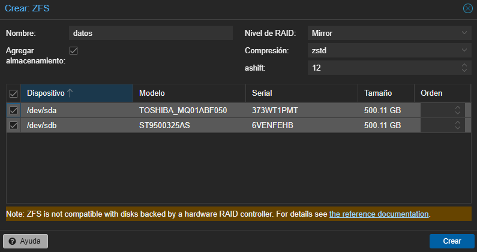
Diálogo «Crear: ZFS» con los dos discos y el nivel de RAID en espejo.
Limita la memoria que usa ZFS
ZFS reserva mucha RAM como caché. Con 40 GB, lo dejamos en 6 GB para que las máquinas virtuales tengan memoria.
A la izquierda, el límite escrito en /etc/modprobe.d. A la derecha, la comprobación tras reiniciar: 6 GB.
Regístralo como almacenamiento en Proxmox
Datacenter → Almacenamiento → Añadir → ZFS, ID datos, y marca Disk image y Container.
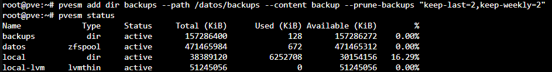
pvesm status lista los almacenamientos: datos activo y, más adelante, backups.
Comprueba que funciona
zpool status datos
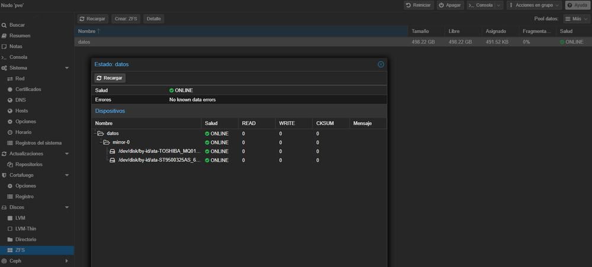
El pool datos en estado ONLINE con los dos discos del espejo sin errores.
Debe poner ONLINE para el pool y para los dos discos, sin errores.
Capítulo 3
Copias de seguridad y snapshots
El espejo protege de que se rompa un disco, pero no de borrar un archivo por error. Para eso hacemos snapshots frecuentes y copias nocturnas de las máquinas.
Espejo no es copia
Si borras un fichero, se borra en los dos discos a la vez. Las copias y los snapshots te dejan volver atrás.
Almacenamiento para las copias
Crea un dataset con cuota
La cuota evita que las copias se coman todo el pool.
La configuración de sanoid y el temporizador sanoid.timer activo, que lanza los snapshots solo.
Avisos de fallos
Proxmox envía alertas cuando falla una copia o un disco. Al principio van por correo; más adelante las pasaremos a Telegram en el capítulo de avisos.
Comprueba que funciona
zfs list -t snapshot | head
vzdump 100 --storage backups --mode snapshot
Aparecen snapshots con nombre autosnap_… y la copia manual termina sin errores.
Capítulo 4
DNS y acceso remoto: LXC 100
Un contenedor LXC es un mini sistema Linux que gasta muy poca memoria. Aquí instalamos AdGuard Home (bloqueo de anuncios para toda la casa) y Tailscale (VPN para entrar desde fuera sin abrir puertos).
Por qué aparte de Docker
Si Docker se detiene, la red de casa sigue teniendo DNS y la VPN sigue funcionando.
Descarga la plantilla de Debian
Almacenamiento local → Plantillas de CT → descarga debian-13-standard.
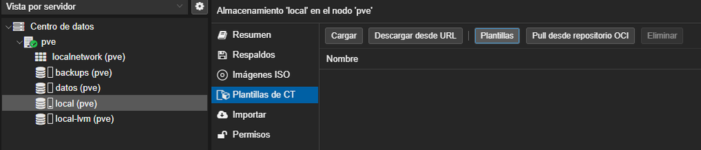
Se elige la plantilla de Debian 13 y se descarga.
Crea el contenedor
Crear CT con ID 100, nombre adguard, 1 núcleo, 512 MB de RAM, 8 GB de disco, IP fija 192.168.0.253/24 y puerta 192.168.0.1. Deja marcado «Contenedor sin privilegios» y activa el anidamiento.
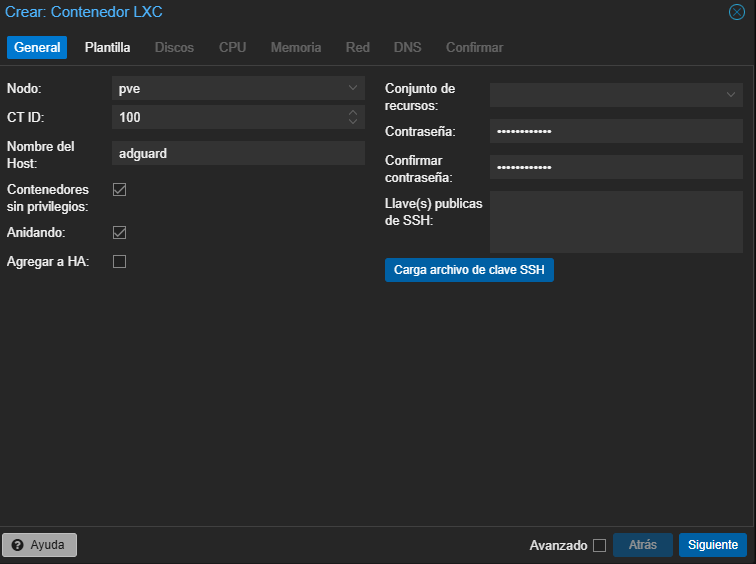
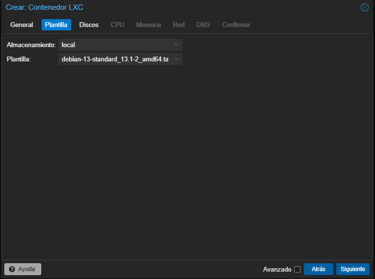
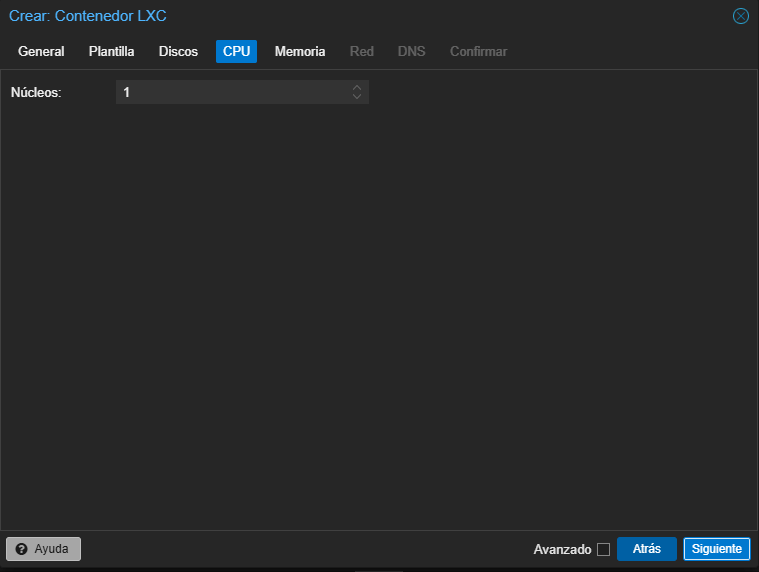
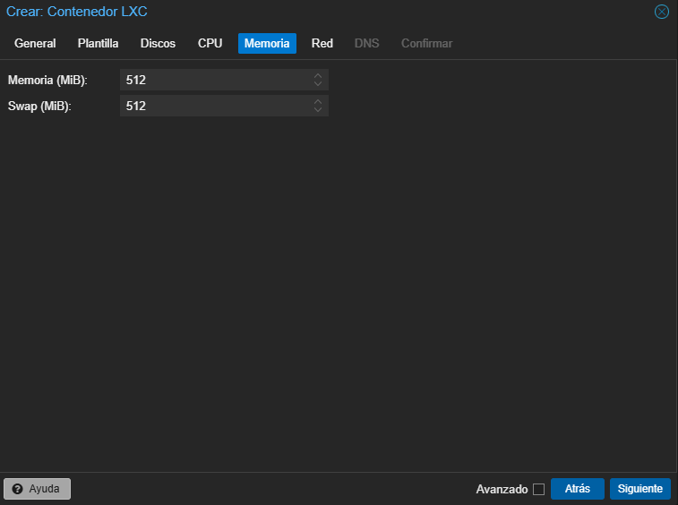
Pestañas del asistente: General, Plantilla, Disco (8 GB), CPU (1 núcleo), Memoria (512 MB), Red (IP fija) y DNS.
Después entra en http://192.168.0.253:3000 para el asistente inicial y crea tu usuario.
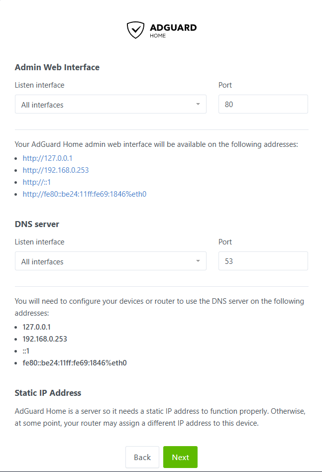
El asistente se abre en el puerto 3000: eliges las interfaces, creas el usuario y termina con «¡Felicidades!».
Después, en Ajustes → Configuración de DNS, usa servidores cifrados (DoH) como https://dns10.quad9.net/dns-query, y en Filtros → Listas de bloqueo activa las listas de anuncios, rastreadores y malware.
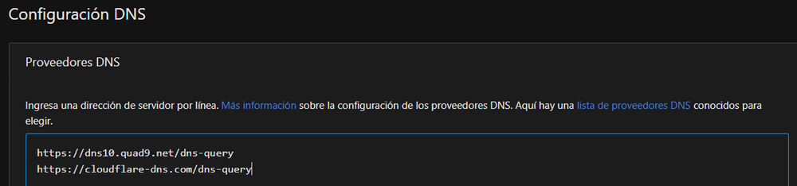
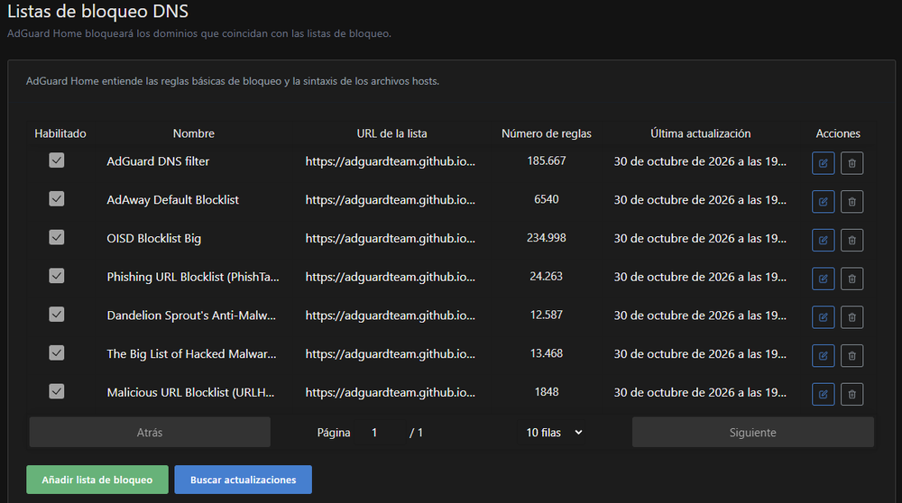
DNS ascendentes cifrados y listas de bloqueo activas.
Instala Tailscale como puente a tu red
Tailscale necesita el dispositivo /dev/net/tun. Apaga el contenedor y, en el nodo Proxmox, añade estas dos líneas:
El fichero /etc/pve/lxc/100.conf con las dos líneas añadidas.
Enciende el contenedor y, dentro de él:
curl -fsSL https://tailscale.com/install.sh | sh
echo 'net.ipv4.ip_forward = 1' >> /etc/sysctl.d/99-tailscale.conf
sysctl -p /etc/sysctl.d/99-tailscale.conf
tailscale up --advertise-routes=192.168.0.0/24
Abre el enlace que muestra, inicia sesión y, en el panel de Tailscale, aprueba la ruta anunciada.
En el panel de Tailscale se aprueba la ruta de subred 192.168.0.0/24.
Para usar AdGuard también fuera de casa, en Tailscale → DNS → Add nameserver pon la IP de Tailscale del contenedor (tailscale ip -4).
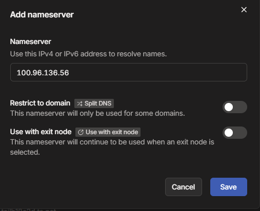
AdGuard como servidor DNS de la tailnet.
Reparte el DNS por la red
En el router, en la configuración del DHCP, pon como DNS 192.168.0.253. Todos los dispositivos usarán AdGuard al renovar la conexión.
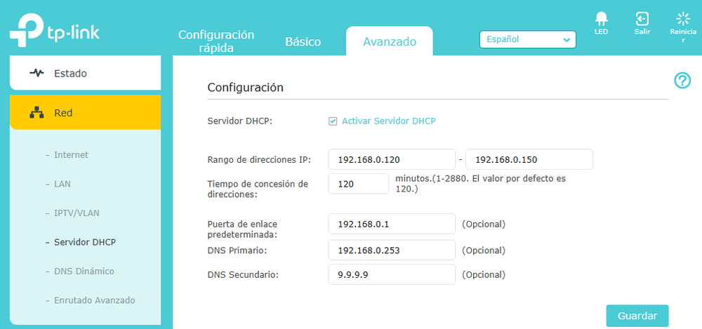
En el router (aquí un TP-Link), Servidor DHCP: el DNS primario apunta a 192.168.0.253.
Router de la operadora
Algunos routers no permiten cambiar el DNS del DHCP. Si es tu caso, pon el DNS a mano en cada dispositivo o usa un router propio.
Comprueba que funciona
nslookup google.com 192.168.0.253
Responde con una IP, y en el panel de AdGuard empiezan a aparecer consultas de tus dispositivos.
Capítulo 5
La puerta de entrada web: LXC 101
Un proxy inverso recibe todas las peticiones web y las reparte según el nombre: kuma.tudominio.com va a una máquina y tudominio.com a otra, con HTTPS en todas.
Crea el contenedor
ID 101, nombre npm, 1 GB de RAM, 8 GB de disco en el almacenamiento datos (el espejo ZFS), IP 192.168.0.252/24. En la pestaña Opciones → Características marca Nesting y keyctl: Docker las necesita dentro de un LXC.
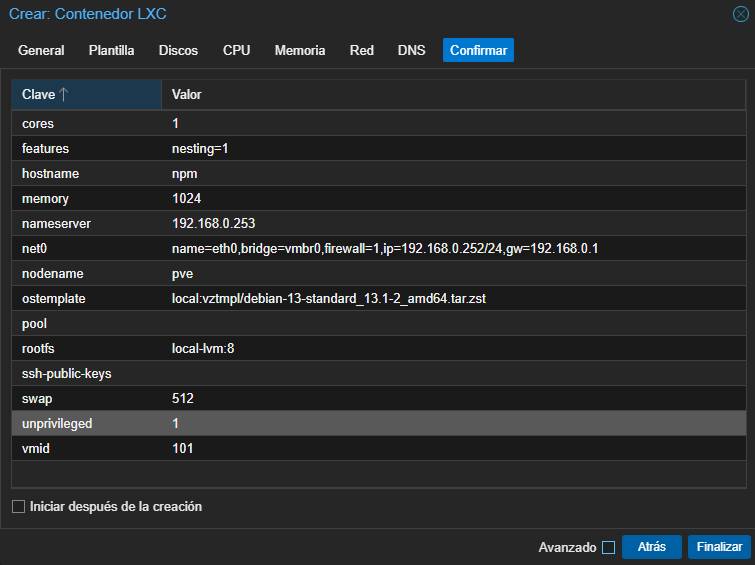
A la izquierda, el resumen del asistente. A la derecha, los comandos para activar nesting y arrancar el contenedor.
Abre http://192.168.0.252:81. Crea tu usuario administrador en el primer acceso, con una contraseña larga y única.
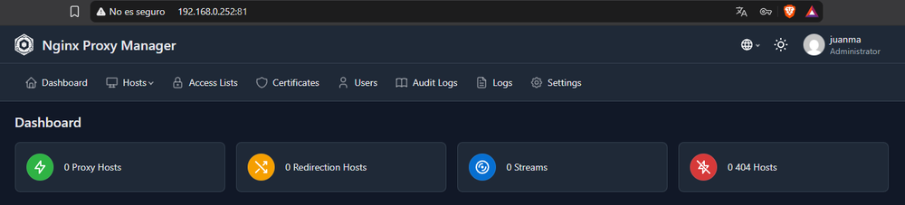
El panel de NPM recién instalado, sin proxy hosts todavía.
Versiones fijas
Fíjate en que la imagen lleva una versión concreta (2.16.0) y no latest. Así una actualización nunca llega sin que tú lo decidas.
Comprueba que funciona
El panel carga en el puerto 81 y docker ps muestra el contenedor npm en estado Up.
Capítulo 6
Dos máquinas virtuales: personal y profesional
Las aplicaciones van en máquinas virtuales Debian con Docker. Usamos dos para aislar lo personal (tu nube) de lo profesional (tu web pública y pruebas): si algo se compromete en una, la otra no se ve afectada.
VM
Nombre
IP
RAM
Disco sistema
Disco datos
102
personal
192.168.0.250
8 GB
20 GB (ZFS)
100 GB (ZFS)
103
profesional
192.168.0.251
8 GB
16 GB (ZFS)
50 GB (ZFS)
Crea la VM
Sube la ISO de Debian 13 netinst, y en Crear VM elige: máquina q35 con la BIOS por defecto (SeaBIOS), controlador VirtIO SCSI single, disco en datos (el espejo ZFS), 2 núcleos con tipo de CPU host, 8 GB de RAM y red VirtIO. En la pestaña Sistema marca Agente QEMU.
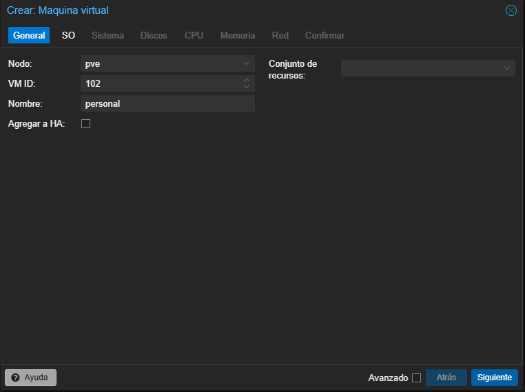
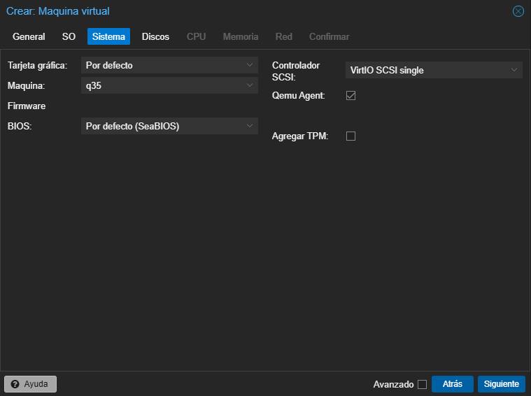
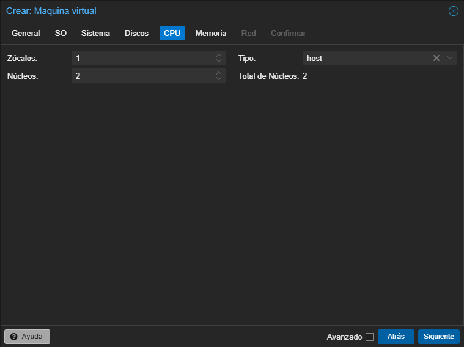
Asistente de la VM 102: General, Sistema (agente QEMU), Disco (20 GB), CPU (2 núcleos, tipo host), Memoria (8 GB) y confirmación.
Pon también el disco del sistema en el espejo
En las capturas el disco va a local-lvm, que está en el SSD único del sistema: si ese SSD falla, la VM solo se recupera desde la copia nocturna. Este servidor empezó así y después se movieron los discos en caliente, sin apagar nada: VM → Hardware → disco → Acción del disco → Mover almacenamiento → datos, con «Borrar origen» marcado. Desde la terminal: qm disk move 102 scsi0 datos --delete 1. Un LXC hay que pararlo antes: pct move-volume 101 rootfs datos --delete 1.
Instala Debian
Instalación mínima: sin escritorio, con servidor SSH y utilidades estándar. Crea un usuario normal, por ejemplo juanma, y no uses root para el día a día. Pon la IP fija desde el router (reserva DHCP) o en /etc/network/interfaces.
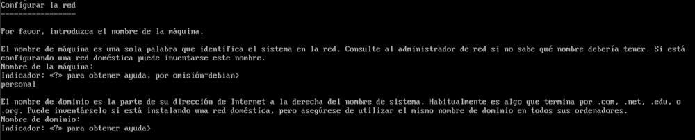
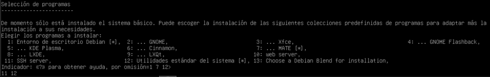
Instalador de Debian: nombre de la máquina, particionado guiado, selección de programas (servidor SSH y utilidades) e instalación de GRUB.
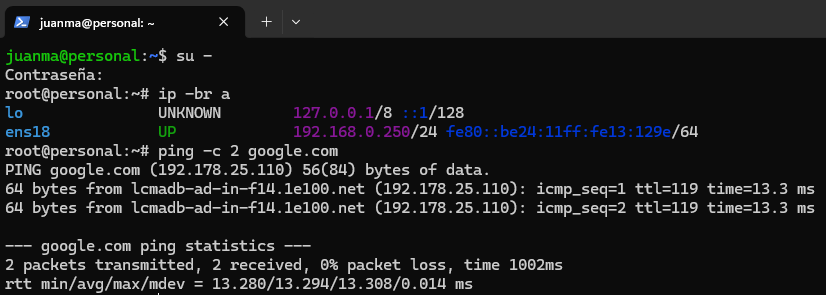
IP estática en /etc/network/interfaces y prueba de red con ping.
Cierra sesión y vuelve a entrar para que el grupo docker se aplique. El agente permite ejecutar comandos en la VM desde Proxmox con qm guest exec.
Limita el tamaño de los logs de Docker
Por defecto Docker guarda los logs de cada contenedor sin límite y, con meses de uso, pueden llenar el disco. Con esto cada contenedor guarda como mucho 3 ficheros de 10 MB:
Solo se aplica a los contenedores creados después. Si ya tenías alguno, recréalo con docker compose up -d --force-recreate. Haz lo mismo en el LXC 101.
Activa las actualizaciones de seguridad automáticas
En Debian solo instala, por defecto, los parches del repositorio de seguridad. El resto de actualizaciones las decides tú. Hazlo también en los dos LXC. En el nodo Proxmox no: allí conviene actualizar a mano.
Añade un disco de datos en ZFS
VM → Hardware → Añadir → Disco duro, almacenamiento datos, 100 GB. Dentro de la VM:
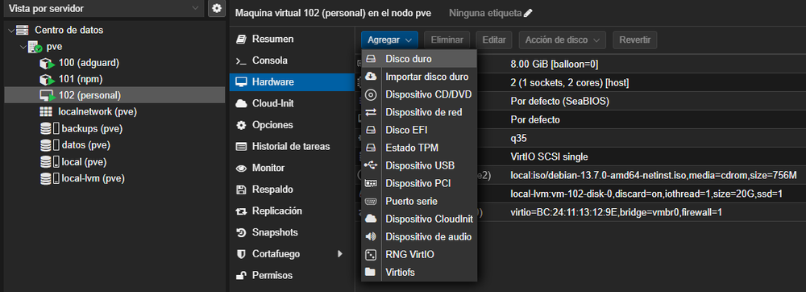
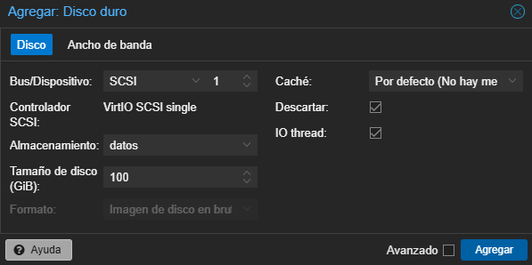
Se añade un disco nuevo desde el almacenamiento datos (el pool ZFS).
lsblk
sudo mkfs.ext4 /dev/sdb
sudo mkdir -p /srv/data
echo "UUID=$(sudo blkid -s UUID -o value /dev/sdb) /srv/data ext4 defaults 0 2" | sudo tee -a /etc/fstab
sudo mount -a
sudo chown -R $USER:$USER /srv/data
lsblk muestra el disco del sistema y el nuevo de 100 GB sin particionar.
Error típico
Si ejecutas los pasos como root en vez de con tu usuario, los ficheros quedan con otro dueño y los contenedores no pueden leerlos. Se arregla con sudo chown -R juanma:juanma /srv/data.
Error real: se copió el comando con tuusuario sin cambiarlo. Sustituye siempre los valores de ejemplo por los tuyos.
Repite para la VM 103 con su nombre, IP y disco de 50 GB.
Comprueba que funciona
docker run --rm hello-world
df -h /srv/data
Docker responde con el mensaje de bienvenida y /srv/data aparece montado con el tamaño del disco.
Capítulo 7
Desplegar las aplicaciones
Cada aplicación se describe en un archivo docker-compose.yml. Todo queda en /srv/data, que está en el pool ZFS, así que se copia y se protege con el resto.
cd /srv/data/stacks/utilidades && docker compose up -d
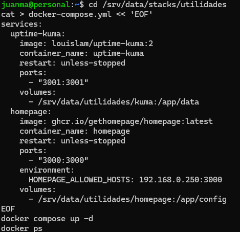
El compose de utilidades y el asistente inicial de Uptime Kuma (elige SQLite, la opción sencilla).
Error típico
Si Homepage responde Host validation failed, falta el nombre con el que accedes en HOMEPAGE_ALLOWED_HOSTS. Añádelo y recrea el contenedor.
VM 102: Nextcloud
Tu nube privada, con base de datos MariaDB y caché Redis. Las contraseñas no van en el compose, sino en un fichero .env en la misma carpeta, que Docker Compose lee solo.
cd /srv/data/stacks/nextcloud
umask 077 # el .env solo lo podrá leer tu usuario
P1=$(openssl rand -base64 24); P2=$(openssl rand -base64 24)
printf "MARIADB_ROOT_PASSWORD='%s'\nMARIADB_PASSWORD='%s'\nMYSQL_PASSWORD='%s'\n" "$P1" "$P2" "$P2" > .env
El compose de Nextcloud en la VM, con las contraseñas generadas en el .env.
Error típico: un $ dentro de la contraseña
Docker Compose trata $ como el inicio de una variable, tanto en el compose como en un .env sin comillas, y la contraseña que recibe el contenedor ya no es la que escribiste. Pon los valores del .env entre comillas simples, como arriba. Para ver lo que reciben de verdad los contenedores: docker compose config.
El archivo .env no se sube a ningún repositorio
Contiene contraseñas. Si algún día publicas tus compose en GitHub, sube solo un .env.example con valores falsos. Este proyecto lo hace así: .env está en el .gitignore.
Tareas de fondo de Nextcloud
Nextcloud tiene tareas periódicas: vaciar la papelera, limpiar versiones y ficheros temporales o enviar avisos. Por defecto solo se lanzan cuando alguien abre la web (modo «AJAX»), así que con poco uso pasan semanas sin ejecutarse. Pásalo a cron:
Tu usuario está en el grupo docker, así que no hace falta root. En Nextcloud → Ajustes de administración → Ajustes básicos debe aparecer «Cron» marcado, con la última ejecución hace menos de 5 minutos.
VM 102 y 103: Portainer
Portainer da una interfaz web para ver y gestionar los contenedores de cada VM. Como el resto, va en su propio compose, /srv/data/stacks/portainer/docker-compose.yml, para que su versión quede fija y escrita:
docker volume create portainer_data
cd /srv/data/stacks/portainer && docker compose up -d
Entra en https://IP-DE-LA-VM:9443 y crea el usuario administrador en los primeros minutos, porque pasado un rato Portainer bloquea el registro por seguridad.
Arranque de Portainer en la VM 103 y primera pantalla para crear el administrador.
VM 103: portfolio
Una web estática servida con nginx. Los archivos de tu web están en /srv/data/portfolio.
Y su configuración, default.conf, en la misma carpeta:
server {
listen 80;
listen [::]:80;
server_name localhost;
# nginx está detrás de NPM y Cloudflare y solo ve http: con redirecciones
# absolutas, /carpeta mandaría al visitante a http://tudominio.com/carpeta/
absolute_redirect off;
server_tokens off;
add_header Strict-Transport-Security "max-age=31536000" always;
add_header X-Content-Type-Options "nosniff" always;
add_header Referrer-Policy "strict-origin-when-cross-origin" always;
add_header X-Frame-Options "SAMEORIGIN" always;
location / {
root /usr/share/nginx/html;
index index.html;
}
}
# www.tudominio.com → tudominio.com (NPM reenvía el nombre original)
server {
listen 80;
listen [::]:80;
server_name www.tudominio.com;
return 301 https://tudominio.com$request_uri;
}
# Comprueba la configuración antes de aplicarla
docker run --rm -v "$PWD/default.conf:/etc/nginx/conf.d/default.conf:ro" nginx:1.31.8-alpine3.24 nginx -t
docker compose up -d
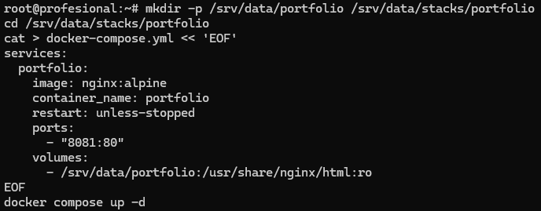
El compose del portfolio en la VM 103.
Error típico
Si la web carga pero las imágenes dan 404, es un problema de permisos de lectura: chmod -R a+rX /srv/data/portfolio.
Comprueba que funciona
Cada servicio responde en su puerto desde tu ordenador: Kuma en :3001, Homepage en :3000, Nextcloud en :8080 y Portainer en :9443. El portfolio, en :8081, solo debe verse desde el proxy: el firewall del capítulo de seguridad lo bloqueará para el resto.
Capítulo 8
Publicar tu web sin abrir puertos
Normalmente para publicar una web abres los puertos 80 y 443 del router y expones tu IP de casa. Con Cloudflare Tunnel es tu servidor el que se conecta hacia fuera, así que no hay puertos abiertos ni IP pública expuesta. Funciona incluso si tu operadora usa CGNAT.
Pasa tu dominio a Cloudflare
Crea una cuenta gratuita, añade tu dominio y cambia los servidores de nombres (nameservers) en el registrador por los que te indique Cloudflare. Tarda desde unos minutos hasta unas horas.
Crea el túnel
En Cloudflare: Zero Trust → Networks → Tunnels → Crear túnel → Cloudflared. Ponle de nombre casa y copia el token que muestra.
Arranca cloudflared
En el LXC 101, crea /opt/cloudflared/docker-compose.yml y un .env con el token:
cd /opt/cloudflared
echo 'TUNNEL_TOKEN=PEGA_AQUI_TU_TOKEN' > .env
chmod 600 .env
docker compose up -d
Enlaza el nombre con NPM
En el túnel, pestaña Public Hostname → añade tudominio.com con servicio HTTP a 192.168.0.252:80. Repite con www.
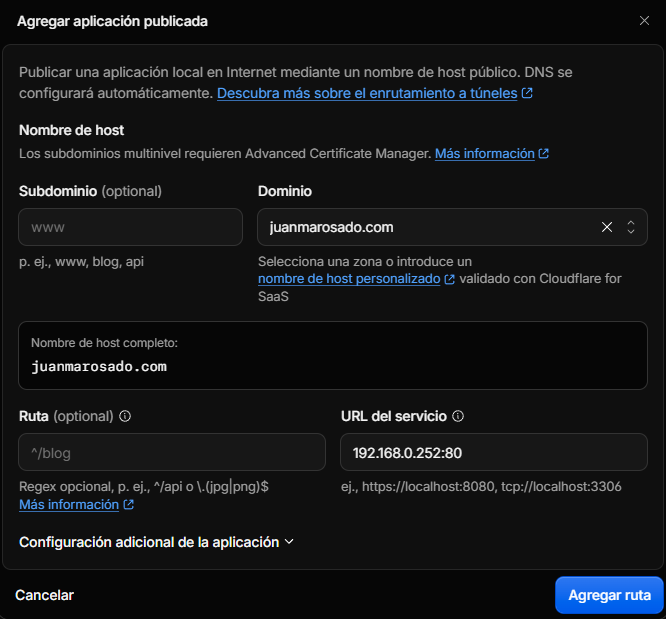
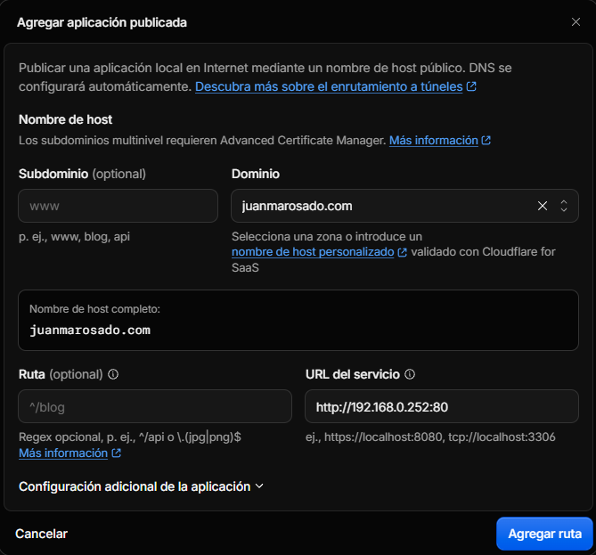
«Agregar aplicación publicada»: el dominio apunta a http://192.168.0.252:80, el NPM.
Crea el proxy host en NPM
En NPM → Hosts → Proxy Hosts → Añadir: dominio tudominio.com, esquema http, IP 192.168.0.251 y puerto 8081.
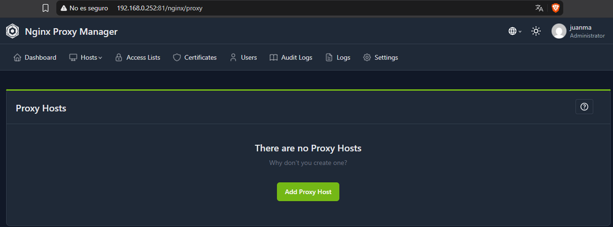
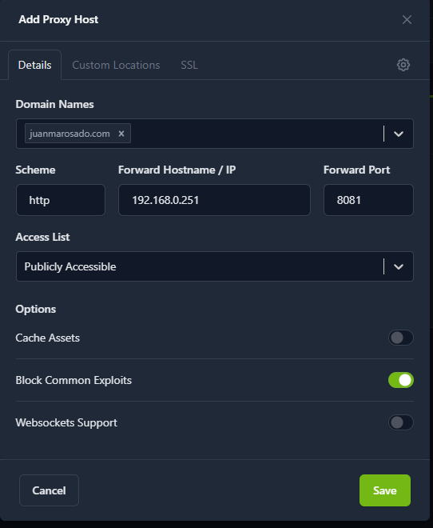
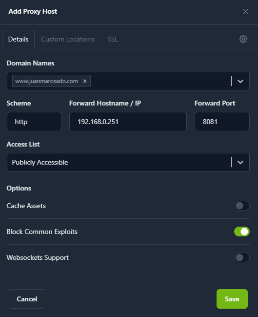
NPM → Proxy Hosts: una entrada por dominio, con destino http 192.168.0.251:8081.
Token del túnel
El token da acceso al túnel. No lo publiques ni lo pegues en capturas. Si se filtra, regenéralo desde el panel de Cloudflare.
Comprueba que funciona
Abre https://tudominio.com desde los datos del móvil (sin wifi). Debe cargar tu web con candado.
Capítulo 9
Nombres con HTTPS para tus servicios internos
En lugar de recordar 192.168.0.250:3001, accederás a https://kuma.casa.tudominio.com con certificado válido, pero solo desde tu red o por VPN.
Crea un token de Cloudflare para el certificado
Cloudflare → Mi perfil → Tokens de API → Crear token con la plantilla Edit zone DNS, limitado a tu zona. Cópialo.
Pide un certificado comodín en NPM
NPM → SSL Certificates → Add → Let's Encrypt via DNS. Dominios: *.casa.tudominio.com y casa.tudominio.com. Proveedor: Cloudflare, y pega el token. Acepta los términos.
Por qué comodín
Un solo certificado vale para todos los nombres algo.casa.tudominio.com. Cada servicio nuevo no necesita certificado propio.
Haz que el nombre apunte a NPM dentro de casa
En AdGuard Home → Filtros → Reescrituras de DNS → Añadir: *.casa.tudominio.com → 192.168.0.252.
Así, dentro de tu red, esos nombres van directamente al proxy. Fuera de casa no resuelven a nada útil.
Crea una lista de acceso solo LAN
NPM → Access Lists → Añadir: nombre solo-lan, y en Rules permite 192.168.0.0/24. Si usas Tailscale, añade también 100.64.0.0/10.
Crea un proxy host por servicio
Nombre
Destino
Notas
kuma.casa…
http 192.168.0.250:3001
Websockets
home.casa…
http 192.168.0.250:3000
nextcloud.casa…
http 192.168.0.250:8080
Ver abajo
portainer1.casa…
https 192.168.0.250:9443
Destino HTTPS
portainer2.casa…
https 192.168.0.251:9443
Destino HTTPS
adguard.casa…
http 192.168.0.253:80
proxmox.casa…
https 192.168.0.254:8006
Websockets
En todos: pestaña SSL con el certificado comodín, Force SSL y HTTP/2; y la lista de acceso solo-lan.
Ajusta Nextcloud para que acepte el nuevo nombre
Nextcloud rechaza nombres que no conoce. Desde la VM 102:
En el proxy host de Nextcloud, pestaña Advanced, añade client_max_body_size 10G; para poder subir archivos grandes.
Error típico
Si el nombre no abre, vacía la caché DNS del ordenador con ipconfig /flushdns y comprueba con nslookup kuma.casa.tudominio.com que responde 192.168.0.252.
Comprueba que funciona
Todos los nombres abren con candado en casa. Desde el móvil con datos, sin VPN, dan error: es lo que queremos.
Capítulo 10
Seguridad: firewall y accesos
Ya funciona todo. Ahora lo protegemos para que, si algo se compromete, el daño quede contenido.
Principios aplicados
Medida
Qué evita
Sin puertos abiertos en el router
Escaneos y ataques directos desde Internet
Cloudflare delante de la web
Oculta tu IP y filtra tráfico malicioso
Paneles internos solo por LAN o VPN
Acceso a Proxmox o Portainer desde fuera
VM profesional aislada de la personal
Que un fallo en una web de pruebas llegue a tus datos
Usuario propio con 2FA en Proxmox
Entrar con la cuenta root si se filtra una contraseña
Crea tu usuario en Proxmox con 2FA
Datacenter → Permisos → Usuarios → Añadir, reino Proxmox VE authentication server. Dale el rol Administrator en la ruta /. Después, Datacenter → Permisos → Two Factor → Añadir un TOTP y escanea el QR con una app de autenticación.
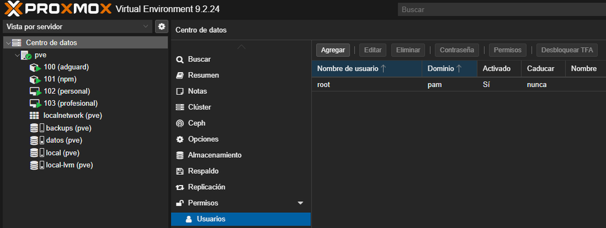
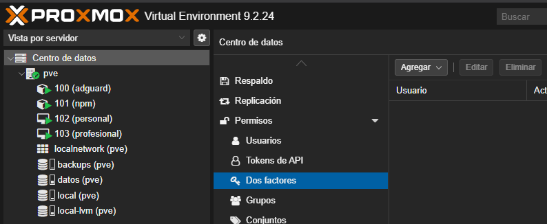
Crear el usuario, darle el rol Administrator en / y añadir un segundo factor TOTP.
Guarda los códigos de recuperación
Si pierdes el móvil y no tienes los códigos, tendrás que entrar con root@pam desde el terminal para recuperarte. Déjalo como acceso de emergencia.
Activa el firewall del datacenter
Datacenter → Cortafuegos → Opciones → Cortafuegos: Sí. Antes de activarlo, crea una regla que permita el acceso a la web de Proxmox desde tu LAN, o te quedarás fuera.
IN ACCEPT macro SSH origen 192.168.0.0/24
IN ACCEPT puerto 8006/tcp origen 192.168.0.0/24
Reglas de la VM profesional (103)
VM 103 → Cortafuegos. El objetivo es que solo NPM pueda llegar a la web y que la VM no pueda tocar al resto.
IN ACCEPT 8081/tcp origen 192.168.0.252 (NPM → portfolio)
IN ACCEPT 22/tcp origen 192.168.0.0/24 (SSH desde la LAN)
IN ACCEPT 9443/tcp origen 192.168.0.0/24 (Portainer desde la LAN)
OUT DROP destino 192.168.0.250 (no llega a la VM personal)
OUT ACCEPT destino 192.168.0.253 puerto 53 (consultas DNS a AdGuard)
OUT DROP destino 192.168.0.0/24 (resto de la red local)
El orden importa
Las reglas se evalúan de arriba abajo y gana la primera que coincide. Pon las excepciones (ACCEPT) antes del bloqueo general (DROP).
Comprueba que funciona
# Desde tu PC: debe FALLAR (solo NPM puede llegar)
curl -m 5 http://192.168.0.251:8081
# Desde la VM 103: debe FALLAR (no alcanza la VM personal)
curl -m 5 http://192.168.0.250:8080
# La web pública sigue funcionando
curl -I https://tudominio.com
Capítulo 11
Monitorización y avisos por Telegram
Un servidor que se cae sin que te enteres no sirve. Uptime Kuma vigila tus servicios y Proxmox avisa de fallos de copias y discos, todo al mismo chat de Telegram.
1. Crea el bot
Habla con @BotFather en Telegram
Envía /newbot, elige un nombre y recibirás un token. Escribe un mensaje cualquiera a tu bot, y consulta tu chat ID con un bot como @userinfobot.
El token es una contraseña
Quien lo tenga puede enviar mensajes como tu bot. No lo pegues en chats, capturas ni repositorios. Si se filtra, en @BotFather usa /revoke y genera uno nuevo.
2. Uptime Kuma
Añade la notificación de Telegram
Ajustes → Notificaciones → Configurar → tipo Telegram, pega el token y el chat ID y activa Predeterminada para que se aplique a todos los monitores nuevos.
Añade monitores
Añadir nuevo monitor → tipo HTTP(s) con la URL de cada servicio. Estos son los de este proyecto:
Monitor
Qué comprueba
Internet
Ping a un DNS público (1.1.1.1)
Router
Ping a 192.168.0.1
AdGuard (DNS y web)
Resuelve nombres y abre el panel
Proxmox, NPM, Portainer ×2
El panel responde
Nextcloud, Homepage
La web responde
Portfolio
La web pública responde (desde fuera de la LAN)
Lista de monitores de Uptime Kuma.
3. Avisos de Proxmox
Proxmox no trae Telegram, pero permite un destino Webhook.
Nombre: telegram
Método: POST
URL: https://api.telegram.org/bot{{ secrets.token }}/sendMessage
Cabecera: Content-Type: application/json
Cuerpo: {"chat_id":"TU_CHAT_ID","text":"{{ title }}\n\n{{ message }}"}
Secreto: nombre = token valor = (tu token)
Error típico
Si sale invalid handlebars syntax, has puesto el token dentro de las llaves de la URL. La URL debe llevar literalmente {{ secrets.token }}; el token real va solo en el campo Secreto.
Pruébalo y enrútalo
Pulsa Probar: debe llegarte un mensaje. Después, en Matchers, edita default-matcher y cambia el destino al nuevo telegram.
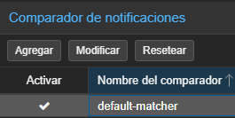
El comparador default-matcher, que decide a qué destino van los avisos.
Comprueba que funciona
Para el contenedor de Nextcloud durante un minuto: Kuma te avisa por Telegram. Vuelve a encenderlo y recibes el aviso de recuperación.
Capítulo 12
Copias de configuración y actualizaciones
Las copias de las máquinas ya cubren los discos, pero la configuración del propio Proxmox y los volcados de bases de datos conviene guardarlos aparte y en un formato que se pueda leer.
Script de copia en la VM 102
Guarda un volcado de la base de datos de Nextcloud y los ficheros de configuración. Créalo en /usr/local/bin/dbdump.sh:
Estas copias están en el mismo pool. Si fallan los dos discos a la vez, se pierden también. Sube de vez en cuando un archivo comprimido con lo crítico a un servicio externo.
Fijar versiones de las imágenes Docker
Con latest, una actualización automática puede romper un servicio sin que lo notes. Fija la versión exacta en el compose:
# Ver la versión que corre ahora
docker inspect NOMBRE --format '{{index .Config.Labels "org.opencontainers.image.version"}}'
# Cambiar en el compose, por ejemplo
# image: jc21/nginx-proxy-manager:latest → jc21/nginx-proxy-manager:2.16.0
Cómo actualizar con seguridad
Haz una copia antes
Ejecuta vzdump de la máquina o backup-config.sh.
Cambia el número de versión en el compose
Mira primero las notas de la versión por si hay cambios importantes.
Aplica la actualización
docker compose pull && docker compose up -d
Mira Uptime Kuma
Si el monitor sigue en verde, listo. Si no, vuelve a la versión anterior y repite el último paso.
Capítulo 13
Errores frecuentes y lecciones aprendidas
Estos son los problemas reales que aparecieron al montar este servidor. Casi todos tienen causa sencilla, y reconocerlos ahorra horas.
Síntoma
Causa
Solución
El comando pegado se corta y da error
El terminal web parte las líneas largas o con saltos
Escribe el comando en una sola línea o usa \ al final de cada línea
Ficheros con propietario incorrecto, contenedor sin permisos
Pasos hechos como root en vez de con el usuario normal
sudo chown -R usuario:usuario /srv/data
La web carga pero las imágenes dan 404
Permisos de lectura del contenedor
chmod -R a+rX carpeta
Portainer aparece caído o «timed out»
No se creó el usuario en los primeros minutos
Recrea el contenedor y crea el administrador enseguida
Homepage: «Host validation failed»
El nombre de acceso no está permitido
Añadirlo a HOMEPAGE_ALLOWED_HOSTS y recrear
No puedo entrar en AdGuard
Contraseña olvidada
Generar un hash nuevo con htpasswd y sustituirlo en AdGuardHome.yaml
El nombre interno no resuelve
Caché DNS del ordenador
ipconfig /flushdns y comprobar con nslookup
Webhook de Telegram: handlebars
Token pegado dentro de la URL
URL con {{ secrets.token }} y el valor en el secreto
Nextcloud: «dominio no de confianza»
El nombre no está en trusted_domains
Añadirlo con occ config:system:set
Lecciones
Documenta mientras lo haces. Guarda cada comando y cada error. Reconstruirlo después es mucho más difícil.
Un espejo no es una copia. Necesitas snapshots, copias y, si puedes, una copia fuera de casa.
Separa por riesgo. Lo público y lo experimental, lejos de tus datos personales.
Fija versiones. Actualizar es una decisión, no algo que te pasa.
Un token es una contraseña. Si lo ves en un chat o captura, regénéralo.
Monitoriza desde el principio. Si no te avisa una alerta, te avisa un usuario enfadado.
Próximos pasos
Subir una copia cifrada de lo crítico a un almacenamiento externo.
Revisar la configuración si cambias de operadora (puede aparecer CGNAT; el túnel y la VPN siguen funcionando).
Añadir un entorno de pruebas (staging) en la VM profesional para tus proyectos de DAW.
Proyecto personal de Juanma Rosado · 1.º DAW, IES Belén (Málaga). HTML, CSS y JavaScript sin librerías.